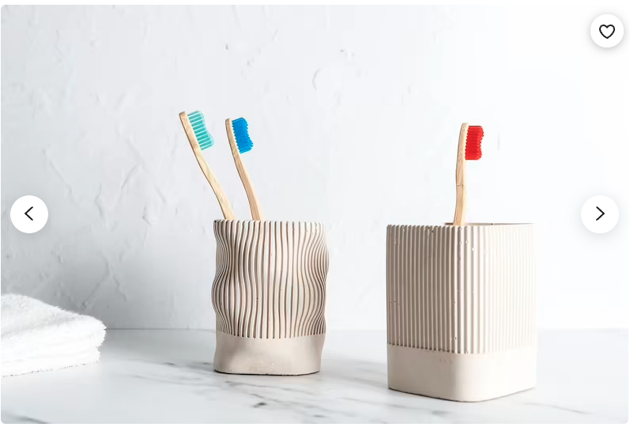
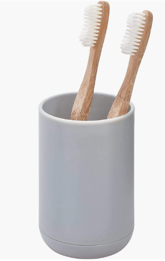

For my final project, I made a toothbrush holder. I used these 4 techniques we learned from class: CAD modeling on Rhino, Grasshopper for parametric pattern, 3D printing for the mold-for-mold, and casting for the final product.
Again, I took some inspiration from Etsy and Amazon for sizing and patterns.
 For the parametric design on Grasshopper, I referenced a tutorial video online to come up with the pattern. After I baked that, I brought it over to Rhino to make the hollow part in the middle, and scale. Making the mold for mold was also a challenge because the 3-part mold was harder for me to viusalize than I thought. At this point I went to Junchao's offie hours and chatted with Rodrigo from class to get tips on how he made his 3-part mold for casting assignment. After that I was able to make the 6-part mold.
I thought the hard part was over when my files for ready for 3D printing. However, I was wrong. My prints kept failing at the mill. I got Prof Nadya's help on printing. Printing with the RAFT was definitely helpful, even though it did take me extra days when other issues came up. Some printers still failed when the adhesion was good. I have no idea why. Luck had a lot to do with it. Also, during the final weeks in the quarter, everyone was trying to print, so I had to stick around to claim printers. After 5 days of trying, I finally printed all the parts I needed. :')'
Pouring Oomoo was another challenge for me. I put the parts together and poured the oomoo, but it was spilling EVERYWHERE. I was not sure what to do at this point. I thought a combination of masking tape and duck tape would help, but they were just not holding. Luckily, before attempting to pour another round of oomoo, I thought of another alternative solution to it. TIN FOIL. This helped, but one of the printed mold struggled because I printed it in very low quality on PRUSA and Oomoo ripped when I was taking it out...It was not that bad though! I also had to remake the part in the middle mold with foil since the part was not holding well.
For casting, I also used the tin foil to ensure the oomoo stays together in case I waste a plater again...and it worked pretty well. Since I remade the middle part without the 3D mold for mold, I poured a bit of plaster first, then waited for the bottom to cast before adding the middle part oomoo and rest of plaster. Middle part was actually a bit difficult to pull out, I could've used some spray(?) that everyone else was talking about. It took some force, but it eventually was removed, and finally I ended up with the toothbrush holder.
As you can tell, one part feels like the pattern is more 'coarse' than the other side because of the way prints were done. If I do it over again, I'd make sure I use the same printer, same filament, same everything.
Source files
Bill of materials
Acknowledgement--thanks everyone!